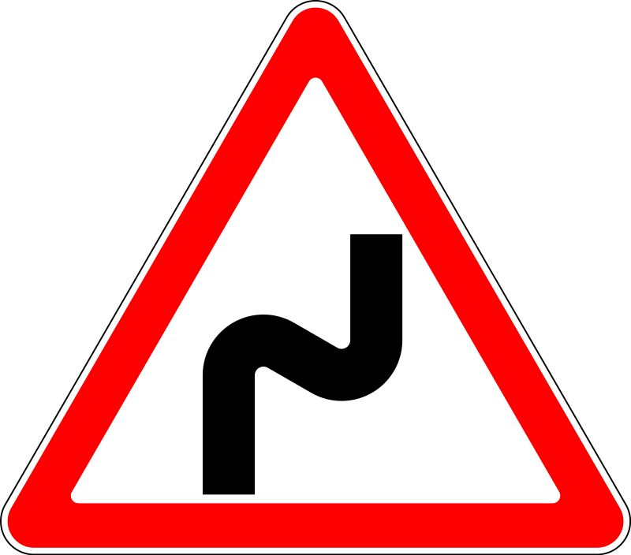
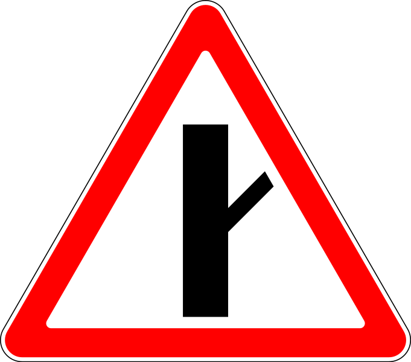
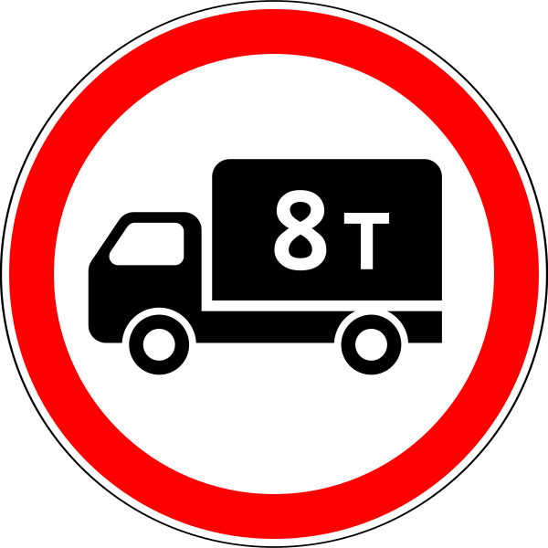
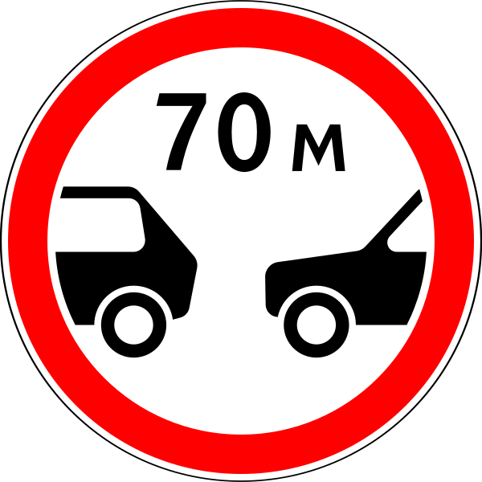
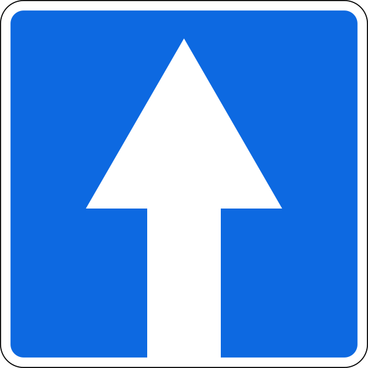
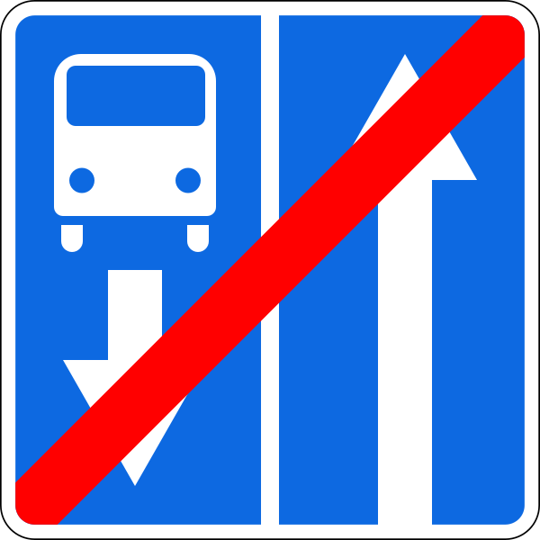

Правила дорожного движения
"Безопасная дорога - залог успеха пешехода"
Какие бывают
Дорожные знаки
Здесь вы сможете узнать о том, какие дорожные знаки существуют. Их можно поделить на несколько групп.
Нажимай на группу и узнавай много нового!
Предупреждающие знаки
Железнодорожный переезд со шлагбаумом
Железнодорожный переезд без шлагбаума
Однопутная железная дорога. Устанавливаются непосредственно перед железнодорожными
переездами
без шлагбаума
Многопутная железная дорога. Устанавливаются непосредственно перед железнодорожными
переездами
без шлагбаум
Приближение к железнодорожному переезду. Дополнительное предупреждение о приближении к
железнодорожному переезду вне населённых пунктов
Пересечение с трамвайной линией. Предупреждает о приближении к пересечению с трамвайными
путями
вне перекрёстка или перед перекрёстком при ограниченной видимости трамвайных путей (менее 50
м).
Водитель должен быть готов остановиться, чтобы уступить дорогу трамваю
Пересечение равнозначных дорог
Пересечение с круговым движением. Движение в кольце идёт против часовой стрелки. Водителю
рекомендуется снизить скорость, быть готовым уступить дорогу транспортным средствам, имеющим
преимущество
Светофорное регулирование. Предупреждает о перекрёстке, пешеходном переходе или другом
участке
дороги, движение на которых регулируется светофором. Водитель должен быть готов остановиться
на
красный запрещающий сигнал светофора
Разводной мост
Выезд на набережную. редупреждают водителей о выезде на набережную, берег реки, озера, где
имеется опасность съезда транспортного средства в воду. Водителю рекомендуется снизить
скорость,
оценить ситуацию
Опасный поворот. Закругление дороги малого радиуса или с ограниченной видимостью направо.
Водитель должен помнить, что на таких участках запрещены такие манёвры как обгон, разворот и
движение задним ходом. Водитель обязан снизить скорость для безопасного проезда кривой
Опасный поворот. Закругление дороги малого радиуса или с ограниченной видимостью налево.
Водитель должен помнить, что на таких участках запрещены такие манёвры как обгон, разворот и
движение задним ходом. Водитель обязан снизить скорость для безопасного проезда кривой

Опасные повороты. Предупреждают о приближении к участку дороги с двумя или более опасными
поворотами, следующими друг за другом; первый поворот осуществляется направо. Водитель
должен
помнить, что на таких участках запрещены такие манёвры как обгон, разворот и движение задним
ходом. Водитель обязан снизить скорость для безопасного проезда кривой
Опасные повороты. Предупреждают о приближении к участку дороги с двумя или более опасными
поворотами, следующими друг за другом; первый поворот осуществляется налево. Водитель должен
помнить, что на таких участках запрещены такие манёвры как обгон, разворот и движение задним
ходом. Водитель обязан снизить скорость для безопасного проезда кривой
Крутой спуск
Крутой подъём
Скользкая дорога. Участок дороги с повышенной скользкостью проезжей части. Водитель обязан
снизить скорость и быть готовым к возникновению заноса
Неровная дорога. Участок дороги, имеющий неровности на проезжей части (волнистость, выбоины,
неплавные сопряжения с мостами и тому подобное). Водителю рекомендуется снизить скорость
Искусственная неровность. Предупреждает об искусственной неровности на дороге. Водителю
необходимо снизить скорость
Выброс гравия. Участок дороги, на котором возможен выброс гравия, щебня и тому подобного
из-под
колёс транспортных средств
Опасная обочина. Участок дороги, на котором съезд на обочину опасен
Сужение дороги с обеих сторон
Сужение дороги с правой стороны
Сужение дороги с левой стороны
Двустороннее движение. Начало участка дороги (проезжей части) с встречным движением.
Водитель
должен быть готов к появлению встречных транспортных средств
Пешеходный переход. Водитель должен быть готов остановиться, чтобы пропустить пешеходов.
Дети. Участок дороги вблизи детского учреждения (школы, оздоровительного лагеря и тому
подобного), на проезжей части которой возможно появление детей. Водитель должен быть готов
остановиться, чтобы пропустить детей, переходящих дорогу
Пересечение с велосипедной дорожкой или велопешеходной дорожкой. Водитель должен быть готов
остановиться, чтобы пропустить велосипедистов
Дорожные работы
Перегон скота
Дикие животные
Падение камней. Участок дороги, на котором возможны обвалы, оползни, падение камней

Боковой ветер. Предупреждает о сильных боковых ветрах. Необходимо снизить скорость и
держаться
как можно ближе к центру занимаемой полосы, чтобы в случае порыва не оказаться на обочине
или на
встречной полосе
Низколетящие самолёты. Устанавливается вблизи аэродромов. Предупреждает о низколетящих
самолётах, внезапное появление которых может напугать водителя или создать турбулентный
поток
над участком дороги
Тоннель. Туннель, в котором отсутствует искусственное освещение, или тоннель, видимость
въездного портала которого ограничена. Перед въездом в тоннель необходимо включить ближний
или
дальний свет фар (чтобы в случае отключенного освещения в тоннеле не оказаться на движущемся
автомобиле в тёмном пространстве)
Затор. Участок дороги, на котором образовался затор. По возможности следует выбрать другой
путь
движения
Участок дороги, на котором образовался затор. По возможности следует выбрать другой путь
движения
Знаки приоритета
Главная дорога
Конец главной дороги. Отменяет знак "Главная дорога"
Пересечение со второстепенной дорогой. Предупреждает о близости пересечения с
второстепенными
дорогами одновременно справа и слева
Примыкание второстепенной дороги. Предупреждает о близости примыкания второстепенной
дороги
справа
Примыкание второстепенной дороги. Предупреждает о близости примыкания второстепенной
дороги
слева

Примыкание второстепенной дороги. Предупреждает о близости примыкания второстепенной
дороги
справа
Примыкание второстепенной дороги. Предупреждает о близости примыкания второстепенной
дороги
слева
Примыкание второстепенной дороги. Предупреждает о близости примыкания второстепенной
дороги
справа
Примыкание второстепенной дороги. Предупреждает о близости примыкания второстепенной
дороги
слева

Уступите дорогу. Водитель должен уступить дорогу транспортным средствам, движущимся по
пересекаемой дороге
Движение без остановки запрещено. Запрещается движение без остановки перед стоп-линией,
а
если
её нет — перед краем пересекаемой проезжей части.
Преимущество встречного движения. Запрещается въезд на узкий участок дороги, если это
может
затруднить встречное движение.
Водитель должен уступить дорогу встречным транспортным средствам, находящимся на узком
участке
или противоположном подъезде к нему.
Если навстречу движется мотоцикл без коляски, и с ним возможно разъехаться на узком
участке,
то
можно продолжать движение
Преимущество перед встречным движением. Водитель имеет право проехать узкий участок
дороги
первым
Запрещающие и ограничивающие знаки
Въезд запрещен. Запрещается въезд всех транспортных средств в данном направлении. Этот
дорожный
знак можно увидеть на дорогах с односторонним движением, на въезде против направления
движения.
Действие знака не распространяется на маршрутные транспортные средства.
Движение запрещено.
Движение механических транспортных средств запрещено.

Движение грузовых автомобилей запрещено. Запрещается движение грузовых автомобилей и
составов
транспортных средств с разрешенной максимальной массой более 3,5 т (если на знаке не
указана
масса) или с разрешенной максимальной массой более указанной на знаке, а также тракторов
и
самоходных машин
Движение мотоциклов запрещено. Запрещается движение двухколёсных механических
транспортных
средств (кроме мопедов)
Движение тракторов запрещено
Движение с прицепом запрещено
Движение гужевых повозок запрещено
Движение на велосипеде запрещено
Движение пешеходов запрещено
Ограничение массы. Запрещается движение транспортных средств (в том числе с прицепом),
общая
фактическая масса которых больше цифры на знаке
Ограничение нагрузки на ось. Запрещается движение транспортных средств, у которых общая
фактическая масса, приходящаяся на любую ось, превышает цифру на знаке
Ограничение высоты
Ограничение ширины
Ограничение длины

Ограничение минимальной дистанции. Устанавливает минимальную дистанцию между
транспортными
средствами
Таможня. Запрещается проезд без остановки у контрольного пункта (таможни)
Опасность. Запрещается проезд всех транспортных средств в связи с ДТП, пожаром, и т. д.
Контроль. Запрещается проезд без остановки через контрольные пункты.

Поворот направо запрещён
Поворот налево запрещён
Разворот запрещён
Обгон запрещён
Конец зоны запрещения обгона
Обгон грузовым автомобилям запрещён
Конец зоны запрещения обгона грузовым автомобилям
Ограничение максимальной скорости
Конец зоны ограничения максимальной скорости
Подача звукового сигнала запрещена. Запрещена подача звукового сигнала, кроме тех
случав,
когда
это необходимо для предотвращения ДТП
Остановка запрещена
Стоянка запрещена
Стоянка запрещена по нечётным числам месяца
Стоянка запрещена по чётным числам месяца
Конец зоны всех ограничений
Движение транспортных средств с опасными грузами запрещено
Движение транспортных средств с взрывчатыми и легковоспламеняющимися грузами запрещено
Знаки особых предписаний
Автомагистраль
Конец автомагистрали
Дорога для автомобилей. Дорога, предназначенная для движения только автомобилей,
автобусов и
мотоциклов
Конец дороги для автомобилей

Дорога с односторонним движением
Конец дороги с односторонним движением
Выезд на дорогу с односторонним движением
Реверсивное движение. Начало участка дороги, на котором на одной или нескольких полосах
направление движения может изменяться на противоположное
Конец реверсивного движения
Выезд на дорогу с реверсивным движением
Дорога с полосой для маршрутных транспортных средств
Дорога с полосой для велосипедистов

Конец дороги с полосой для маршрутных транспортных средств
Конец дороги с полосой для велосипедистов
Выезд на дорогу с полосой для маршрутных транспортных средств

Выезд на дорогу с полосой для маршрутных транспортных средств

Выезд на дорогу с полосой для велосипедистов. Запрещён поворот налево
Выезд на дорогу с полосой для велосипедистов. Запрещён поворот направо
Полоса для маршрутных транспортных средств
Полоса для велосипедистов
Конец полосы для маршрутных транспортных средств
Конец полосы для велосипедистов
Направления движения по полосам
Направления движения по полосе
Начало полосы
Конец полосы
Конец полосы
Направление движения по полосам
Число полос
Место остановки автобуса и (или) троллейбуса
Место остановки трамвая
Место остановки такси. Обозначает стоянку легковых такси
Пешеходный переход. Устанавливается справа от дороги на ближней границе перехода.
Пешеходный переход. Устанавливается слева от дороги на ближней границе перехода.
Искусственная неровность
Жилая зона
Конец жилой зоны
Начало населённого пункта
Конец населённого пункта
Начало населённого пункта
Конец населённого пункта
Зона с ограничением стоянки
Конец зоны с ограничением стоянки
Зона регулируемой стоянки
Конец зоны регулируемой стоянки
Зона с ограничением максимальной скорости
Конец зоны с ограничением максимальной скорости
Пешеходная зона
Велосипедная зона
Конец пешеходной зоны
Конец велосипедной зоны